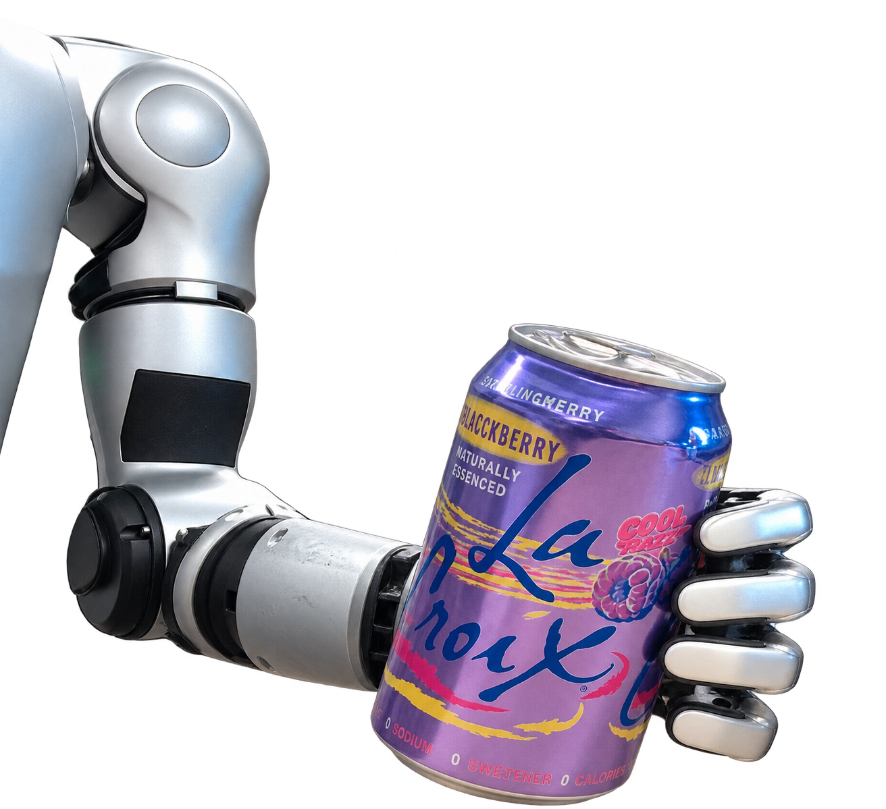
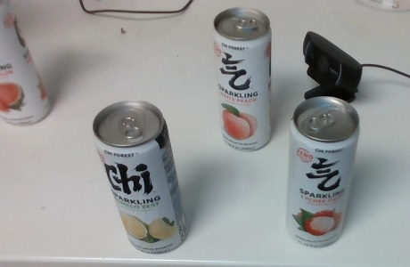
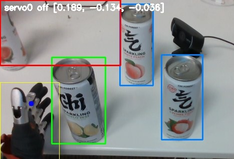

One harness.
Three robots.
How far can Gemma 4 go
when the brain stays local?
Unitree G1 · AgileX PiPER · LeKiwi Robot
Cloud models showed us
what was possible
GPT6 Astra
Advanced reasoning and coding
set a high capability bar.
The on-device question
How much intelligence fits inside
a robot’s physical limits?
AGI House Wi-Fi is doing a great job selling on-device AI today.
Local inference removes the network round trip and external API dependency. Hardware and energy still have a cost.
Any language. Pick a drink.

The same can shape. Different pictures and requests.
Gemma hears the audio directly.
Vision grounds the request in the table.
The robot picks the selected drink.
inside the G1
Stock instruction-tuned, quantized Gemma 4 weights. No task-specific post-training. Language coverage depends on the tested clips and room acoustics.
The question format
changes the result
MODEL CONFIGURATIONThinking off for direct perception.
Short, grounded answers.
INPUT AND RUNTIMERight-sized images.
Warm prefixes. Few output tokens.
The harness asks the model
a question it can answer well.
Orin NX, MAXN with pinned clocks, llama.cpp CUDA. 78 crops from 3 generated kitchen scenes. Perception diagnostic, not a physical-task success rate.
More parameters cost time
E2B already solves this diagnostic.
12B gives tighter boxes, with a longer wait.
Peak board RAM
E2B 5.8 GB · E4B 8.6 GB · 12B 11.4 GB
MAXN, clocks unpinned, thinking off. Same 78-frame diagnostic. Quantization differs; prompts were tuned on E2B. Press C to change the view.
Here, model size earns its keep
E4B’s shorter programs offset its slower per-token rate.
12B on the harder set: 3 / 6 at 16.67 s median. E4B hard-set comparison remains open.
9 basic tasks, one greedy sample each, tested on 2–3 mock layouts. Inference on Orin; generated code executed in host-side mocks. These are program tests, not robot success rates.
LiteRT GPU runs on the G1
Native speech to target choice.
LiteRT adds 460 ms in this comparison.
Both runtimes reached the same score,
with different individual misses.
WebGPU on Vulkan
NVIDIA Tegra Orin adapter
Both engines resident: 7.3 GB board RAM.
CUDA image gate stayed near 320 ms.
LiteRT-LM 0.18.0, E2B, MAXN, unpinned clocks. 14 clips repeated twice. Application-level comparison with different bundles and prefix caching. Coexistence excludes the full robot stack.
One task interface.
Very different bodies.
Unitree G1
Jetson Orin NX 16 GB
BrainCo hand
Our original physical benchmark
AgileX PiPER
Alienware laptop
NVIDIA GPU
Independent teammate port
Only low-level robot control changed
LeKiwi Robot
The same harness approach
in a mobile embodiment
The latest team extension
The prompts and task logic travel.
Each robot supplies its own execution and calibration.
PiPER and LeKiwi Robot deployments are team-reported results. Task portability does not imply identical motor controllers or zero hardware setup.
Gemma resolves meaning.
The harness makes it executable.
The model
Hears the request.
Describes the visible objects.
Chooses what the guest meant.
One direct, grounded question at a time.
The written logic
Coordinates the task.
Measures geometry and reach.
Controls motion and checks the result.
place() say() listen()
Zero-shot task interpretation with stock weights. Robot adapters and calibration remain explicit engineering.
An outside view
turns error into feedback

Existing head-view measurement, shown here as execution evidence
Observe intended versus actual motion
A third-person camera supplies an outside view.
Correct the calibration
The harness feeds measured error back into execution.
Check the physical outcome
A fresh observation tests what actually happened.
Improve execution without changing Gemma’s weights.
Latest G1 third-person auto-calibration result confirmed by the team. No quantitative gain claimed here; the pictured head-view servo is a separate documented measurement path.
A new request becomes
a new task program
def task(robot): cans = robot.look() if not cans: robot.say("No cans in view.") return target = max(cans, key=lambda c: c["x"]) if robot.pick(target["id"]): robot.give()
Illustrative task code over the shared API; the physical skills stay in the adapter
12B median generation on Orin.
Too slow for our live interaction budget.
AGX Thor
Encouraging task-code experiments
on a larger local GPU.
[Add the successful Thor task here]
Press E to edit this task example locally.
Orin figure: 9-task mock suite, not robot execution. Thor success is a team-reported experiment; no timing benchmark recorded. Generated task logic composes existing physical skills.
Gemma 4 gave us
a remarkably strong baseline
Already useful with stock weights
Native vision and audio on a robot.
Grounded decisions at interactive latency.
Model sizes that support different roles.
Our next experiments
Task-specific post-training.
Fewer tokens per successful decision.
Better task programs and feedback-driven calibration.
Order in your language. Choose by the picture.
Built with Gemma 4 and Google AI Edge. Thanks to the Gemma and LiteRT teams.
github.com/MoissanClub/gemma-hackathon
The measured model table
| Metric | E2B | E4B | 12B |
|---|---|---|---|
| One-word perception, correct | 77 / 78 | 69 / 78 | 75 / 78 |
| One-word perception, median request | 368 ms | 532 ms | 829 ms |
| Bounding box, correct | 78 / 78 | 78 / 78 | 78 / 78 |
| Bounding box, median request | 839 ms | 1,499 ms | 2,778 ms |
| Basic task programs, passed | 2 / 9 | 8 / 9 | 8 / 9 |
| Generation request, median wall time | 4.96 s | 4.25 s | 12.20 s |
| Peak board RAM during model runs | 5.8 GB | 8.6 GB | 11.4 GB |
MAXN, clocks unpinned, thinking off. Prompts tuned on E2B; different quantization variants. Program correctness uses mocks. Full sources and limitations are in the speaker notes.